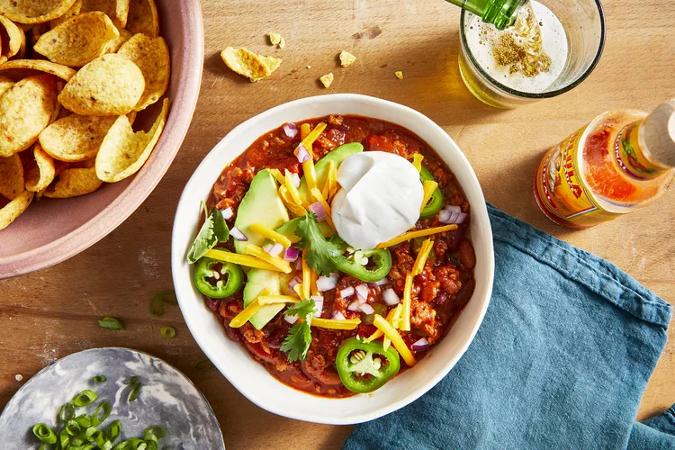

Slow Cooker Chipotle

Slow Cooker Chipotle Chili
My friend Keni's love of smoky chipotle peppers inspired this chili recipe. It comes together easily in the slow cooker and is a unique chili that always stands out. It is a spicy yet mellow chili that gives a kick without the lingering burn, like many chilis do.
Ingredients
- 2 pounds ground beef
- 1 pound bulk Italian sausage
- 1 large onion, diced
Steps
- Heat a large skillet over medium-high heat. Cook and stir beef and sausage in the hot skillet until some of the fat.
- Stir kidney beans, chili beans, diced tomatoes, crushed tomatoes, celery, bell peppers.
- Cook until vegetables are tender and celery retains a slight bite, 6 to 8 hours on Low or 3 to 4 hours on High.